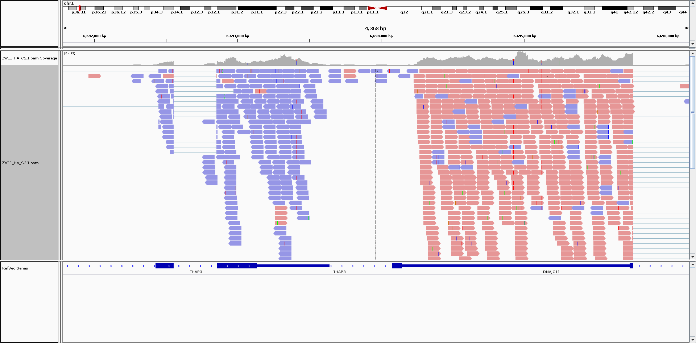

This page contains links to FastQ files (raw sequencing reads with sequencing adapters and barcodes removed) and sequencing quality (FastQC) reports.
The FastQ-format files are gzip-compressed to save disk space and cannot be opened directly. More information about the FastQC output can be found at http://www.bioinformatics.babraham.ac.uk/projects/fastqc/
In a single-end protocol experiment, there will be only a single FastQ file for each sample (Read number: 1). If your samples were paired-end, there will be "R1" and "R2" files available. They are sorted such that each line in the R1 file is paired with the same line in the R2 file. Most sequence aligners require this (or an inter-weaved format) to perform the paired-end alignment.
You will also find multiple fastQ files for the same sample, denoted by different "identifier" fields. If you sequenced the same sample on multiple flowcells, you might see
Here, "fc1", "fc2", etc. stand for "flowcell 1", and so on. The "final" file is the simple combination of all the individual "fc" files. The purpose of tagging the files in this way is to track potential batch effects. If the same sample is run on multiple flowcells, subsequent analysis might require taking this into account rather than simply combining the results of your experiments. If this is not necessary, then you only need the file marked "final". If your sample was run on a single flowcell, then the files marked "fc1" and "final" are, in fact, the same file. Only keep one of them to avoid unnecessary storage costs.
Below, we show a screenshot from Broad's IGV software which shows that the sequenced reads mostly map in the anti-sense direction. The left gene (THAP3) is transcribed left-to-right but the vast majority of the reads map right-to-left (blue color). Conversely, the nearby gene DNAJC11 is transcribed from right-to-left, but the sequencing reads are mostly the reverse complement, mapping left-to-right (red color).
For simple differential expression analyses, this should not affect the results, but it is important to be aware of the assumptions and expectations for any analysis or software you plan to use.